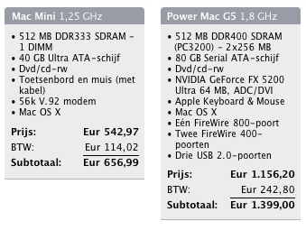

Switcher Koopgids
zaterdag 15 januari 2005 | Apple
De laatste dagen hoor ik van verschillende mensen dat ze de nieuwe Mac mini ernstig overwegen als vervanger van hun huidige Windows PC. Uitstekend! Maar ik moet er hen telkens bijvertellen dat ze beide standaardconfiguraties van de mini beter links laten liggen. Standaard krijg je maar 256Mb intern geheugen: dat is belachelijk weinig en een hypotheek op je aanstaande OS X beleving. Helaas jagen kleine aanpassingen de prijs serieus de hoogte in. Tussen haakjes: de Mac mini is in Europa überhaupt al een pak duurder dan in de VS. Dat zou iets met ons belastingstelsel te maken hebben, las ik in een reactie op de weblog van De Standaard.
Je werkt momenteel op een Windows PC met scherm, muis, toetsenbord enzovoort. Je wil een Mac voor zo weinig mogelijk geld, en liefst zodat je alle bestaande randapparatuur (incl. scherm) kan behouden. Dan heb je twee keuzes: de Mac mini of een single Power Mac G5. Heb je een computer enkel nodig voor digitale foto’s, email, internet, Office en Photoshop, kies voor de Mac mini. Speel je games, werk je veel met video en staat de volledige softwarestal van Adobe meestal tegelijkertijd open voor het zwaardere DTP werk, neem dan de Power Mac. Ikzelf werk met een dual Power Mac, en eerlijk gezegd heb ik die tweede processor nog niet vaak écht nodig gehad.
Hieronder zie je wat beide configuraties kosten, als je het standaardgeheugen verdubbelt (een Gig zou eigelijk nog beter zijn) en — in het geval van de Mac mini — een Apple keyboard erbij neemt (dat heb je echt nodig, trust me). Een pak meer dan de prijzen die de Apple Store afficheert, maar toch niet onoverkomelijk, niet?
Keep in mind: het geheugen van beide machines is achteraf wel gemakkelijk te updaten. In het geval van de Mac mini is het trouwens een van de weinige zaken waarbij dat het geval is. Eén ding is zeker: je zal in de wolken zijn van je nieuwe aanwinst, welke configuratie je ook kiest. Welcome to the club!

dave op 29 april 2005
Veel te dure gehypte bullshit.